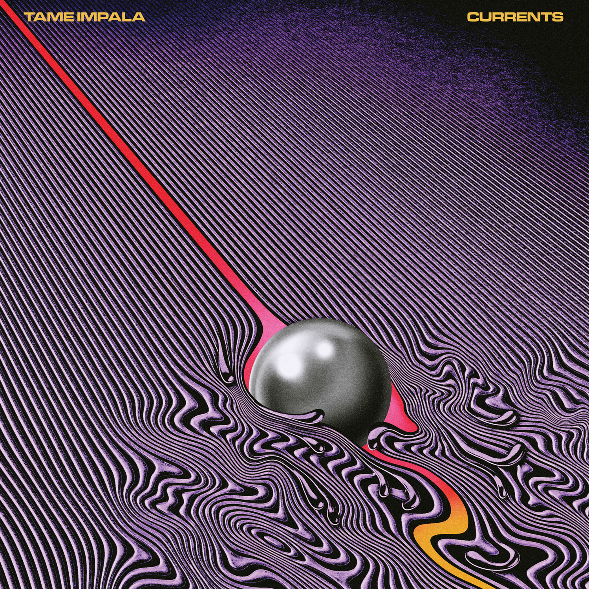
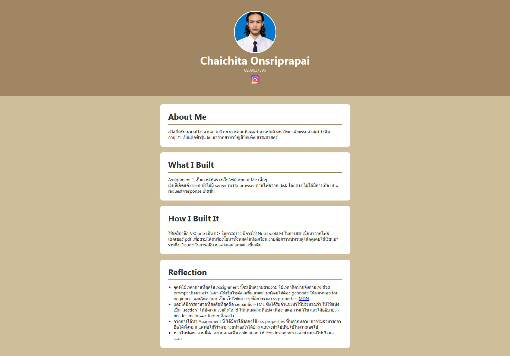
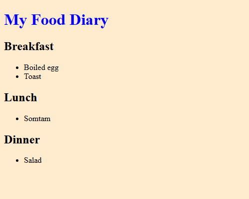

Hello, it's me Pezo.
สวัสดีครับ ผม เปโซ จากสาขาวิทยาการคอมพิวเตอร์ ภาคปกติ มหาวิทยาลัยธรรมศาสตร์ รังสิต อายุ 21 เป็นเด็กซิ่วรุ่น 66 มาจากสาขาบัญชีบัณฑิต ธรรมศาสตร์
จุดเริ่มต้นที่ทำให้สนใจสาย cybersecurity มาจากความรู้สึกว่า coding น่าจะสนุก ประกอบกับมองว่า online privacy เป็นเรื่องใกล้ตัวกว่าที่คิดและมีความเสี่ยงไม่น้อย จึงอยากศึกษาเพิ่มเติมในด้านนี้อย่างจริงจัง
25 Hours
Warping Youth

Currents
Feng Suave

Course Assignment

Lab Worksheet